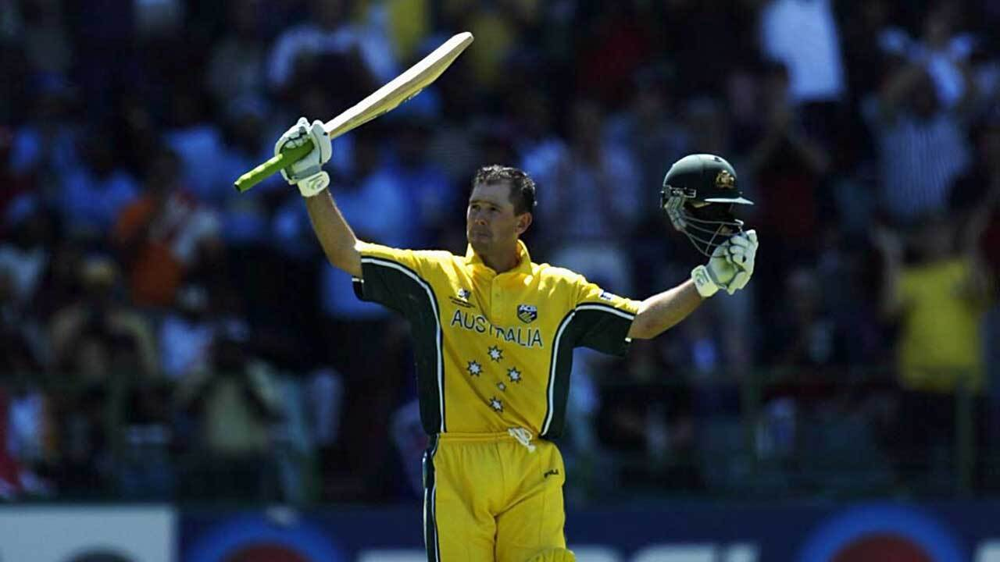
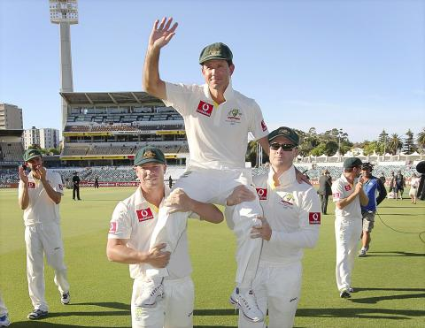

Ricky Ponting
Role: Batsman
Bio: One of the greatest batsmen in cricket history, Ponting led Australia to two World Cup victories as captain and is known for his aggressive batting style.
Career Stats
| Format | Matches | Innings | Not Outs | Runs | High Score | Average | Strike Rate | 100s | 50s |
|---|---|---|---|---|---|---|---|---|---|
| Test | 168 | 287 | 44 | 13378 | 257* | 51.85 | - | 41 | 62 |
| ODI | 463 | 365 | 30 | 13704 | 175* | 86.43 | 80.0 | 47 | 82 |
| T20I | 17 | 15 | 3 | 401 | 98* | 28.64 | 142.0 | 0 | 2 |
Memorable Moments

Ponting's remarkable century in the 2003 World Cup final against India.
His emotional farewell match against South Africa in 2012.